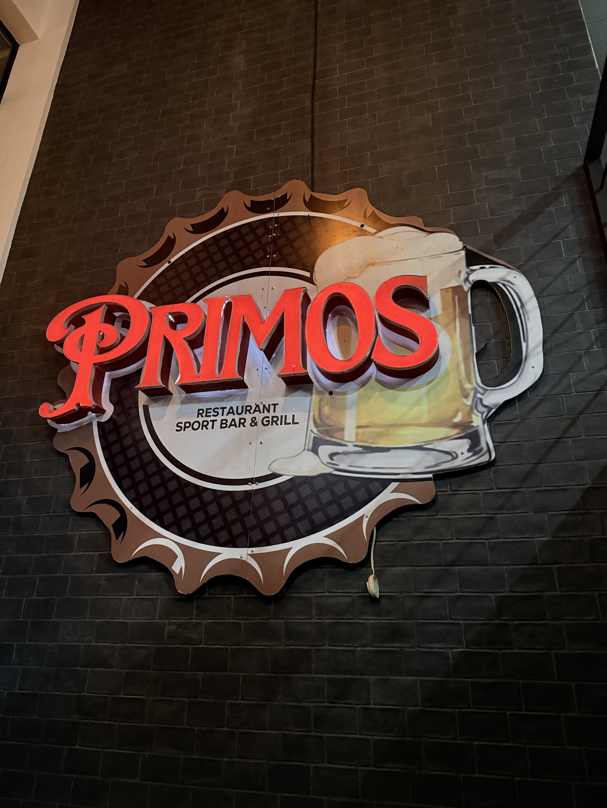

Después de vivir varios años en Estados Unidos, Víctor Zamora, nuestro fundador, decidió que era momento de volver a sus raíces en El Salvador. Regresó buscando disfrutar de su cultura, sus paisajes y esa pasión inigualable por la comida y el deporte. Pero el cariño por su país no tardó en encender una chispa aún más grande: la de emprender y aportar algo propio a su tierra.